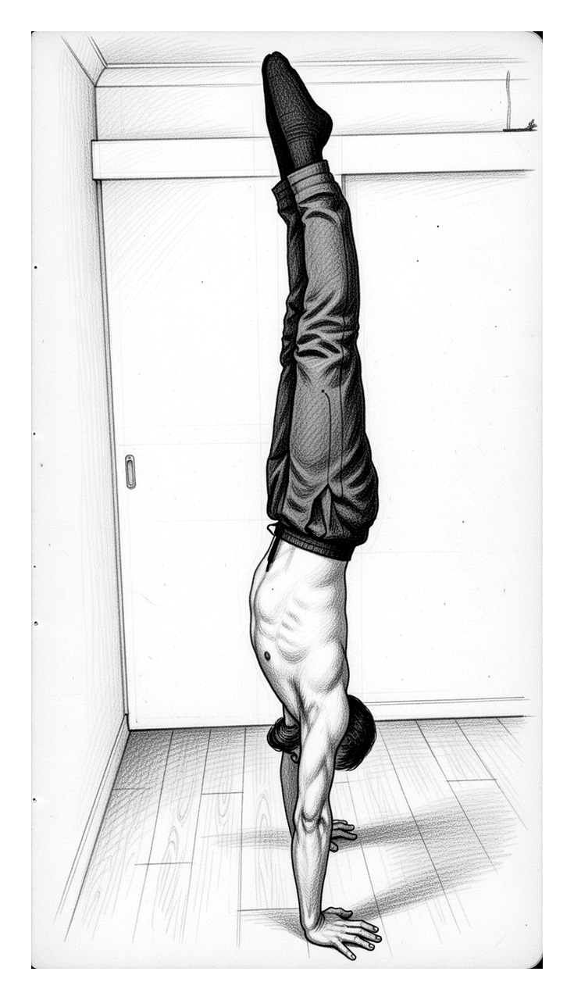
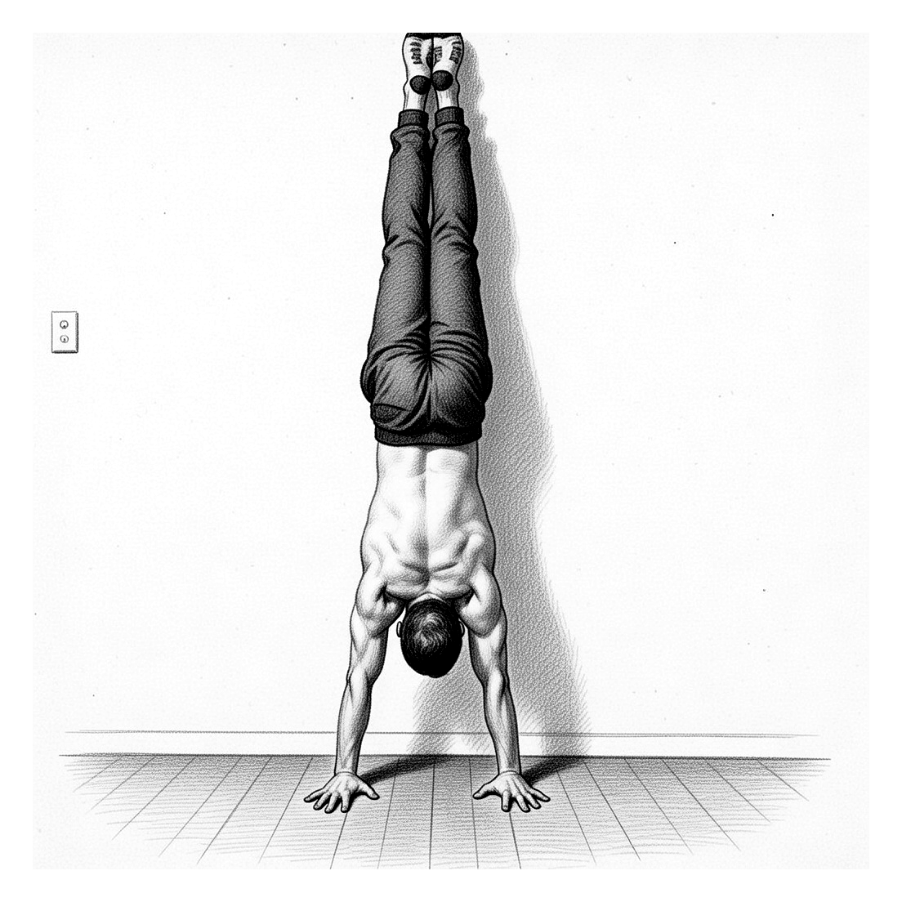
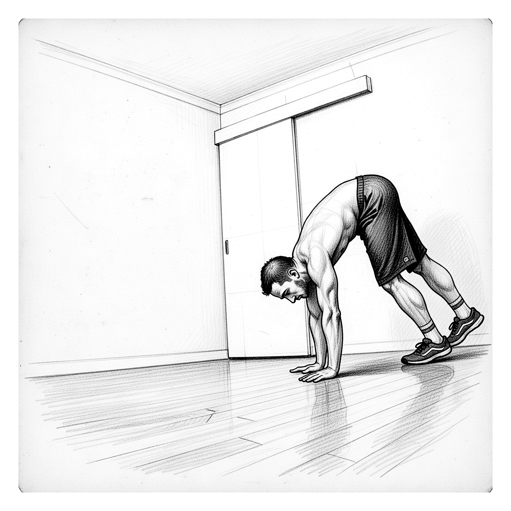
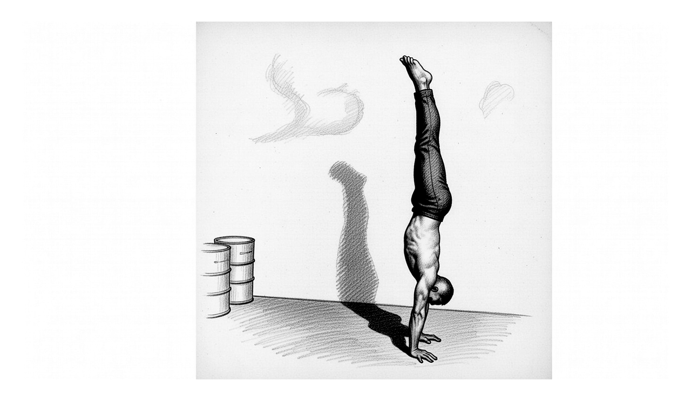
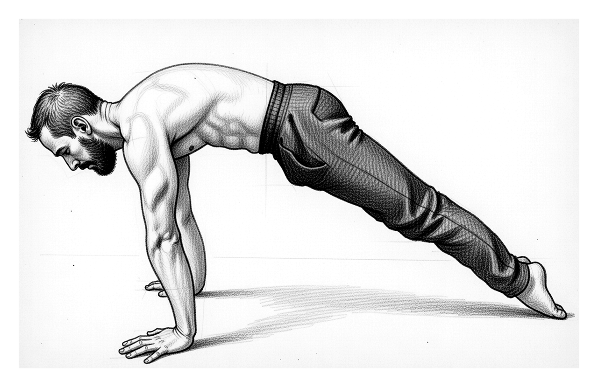
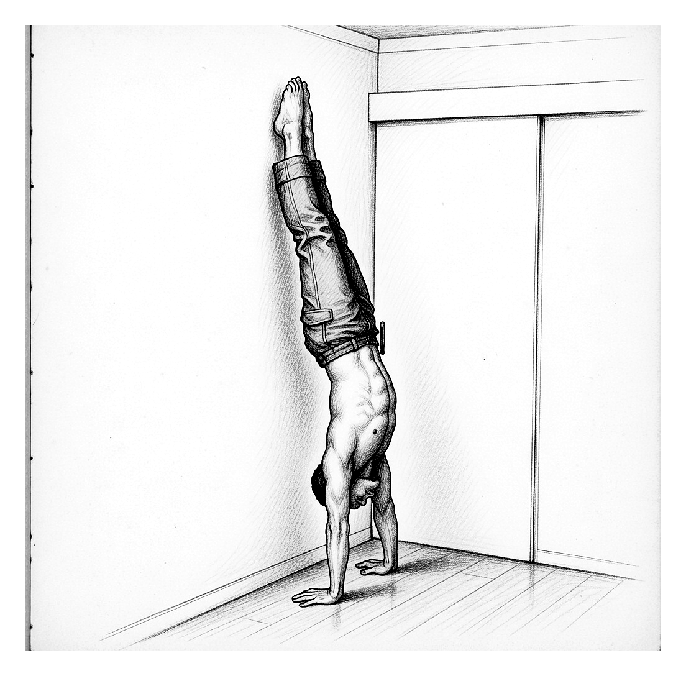

A structured, no-nonsense programme that takes you from zero experience to a 60-second freestanding handstand. Six progressive levels. Real coaching. Real results.
For $19 you get the complete guide (PDF) plus lifetime access to the Handstand Tracker app — train with the programme and log your progress in one place.
No filler. No fluff. A systematic approach to building the strength, mobility, and balance required for a freestanding handstand.
Structured loading and deloading cycles. Add volume systematically. Rest when your body needs it. The fundamentals of intelligent training.
Every key exercise includes a linked video demonstration. Watch correct form, understand common mistakes, and train with confidence.
Each level has a concrete test. No guesswork about when to progress. Meet the criteria, move up. Simple.
Wrists, shoulders, core, balance. This programme develops every link in the chain — not just the flashy bits.




Every level builds on the last. No shortcuts. Each graduation test ensures you’re ready for what comes next.
Wrist conditioning, shoulder mobility, core stability. The unsexy work that makes everything else possible.
Chest-to-wall handstands, hollow body holds. Learning to bear weight on your hands safely.
Heel pulls, toe pulls, and the balance game. This is where the handstand starts to come together.
Kick-up practice and extended balance work. Moments of freestanding balance become seconds.
Shoulder taps, longer holds, consistency work. Your 20-second hold becomes 40.
The grind. Chase the minute. Record it. Graduate. Welcome to hand-balancing.


24 pages of focused instruction. Every exercise includes clear descriptions, illustrated form guides, and linked video tutorials you can watch on your phone.
One price. Two tools. The Complete Training Guide (PDF) and the Handstand Tracker app together for $19.
Already bought? Open your Progress Tracker →
I have a background in both marine science and software engineering. After working as a scientist, I left to pursue coaching and sport full-time. That was 2017. I opened The Bodyweight Gym in Perth — a calisthenics studio that ran until 2021, coaching everyone from complete beginners to competitive athletes.
In the fitness industry, two skills immediately set you apart as a trainer: a strict ring muscle-up and a freestanding handstand. So that's what I learned to teach.
Problem was, I had no gymnastics background. I was a 30-something adult learning from scratch. The first 12 months nearly broke me. Elbow tendonitis that wouldn't go away because I kept progressing too fast. Muscles ready, tendons weren't.
It took two years of trial and error, countless failed attempts, and months of wrist pain before I figured out that wrist conditioning had to come first. The breakthrough came when I stopped rushing and started respecting the timeline.
Since then, I've coached hundreds of people through their first muscle-up and handstand. I learned everything the hard way so you don't have to.
This programme contains everything I know. Six levels. Graduation tests at each stage. No fluff. No shortcuts.
— Mat
The Bodyweight Gym